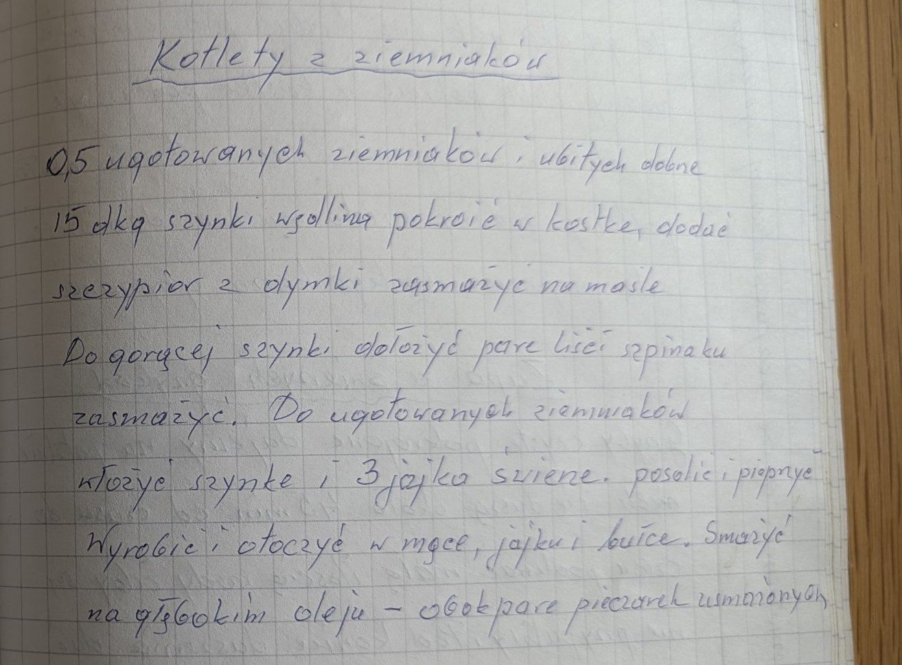
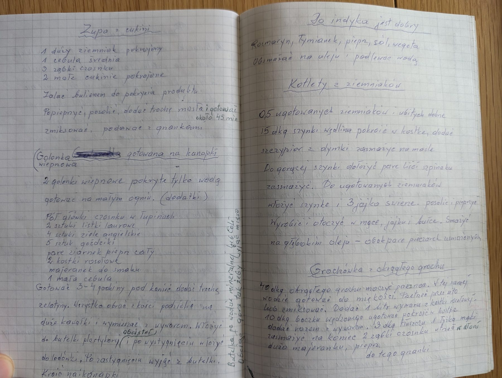

Kotlety z ziemniaków


Składniki
- 0,5 (kg) ugotowanych ziemniaków
- 15 dkg szynki
- szczypior z dymki
- masło
- parę liści szpinaku
- 3 świeże jajka
- sól, pieprz
- mąka, jajko, bułka tarta
- olej do smażenia
- pieczarki
Przygotowanie
- Ziemniaki ugotować i dobrze ubić.
- Szynkę pokroić w kostkę, dodać szczypior z dymki i zasmażyć na maśle; do gorącej szynki dołożyć parę liści szpinaku i zasmażyć.
- Do ziemniaków dodać szynkę i 3 jajka, posolić, popieprzyć i wyrobić.
- Formować kotlety, obtaczać w mące, jajku i bułce.
- Smażyć na głębokim oleju; podawać z usmażonymi pieczarkami.
Oryginalny zapis
Kotlety z ziemniaków 0,5 ugotowanych ziemniaków i ubitych dobrze 15 dkg szynki wędlina pokroić w kostkę, dodać szczypior z dymki zasmażyć na maśle Do gorącej szynki dołożyć parę liści szpinaku zasmażyć. Do ugotowanych ziemniaków włożyć szynkę i 3 jajka świeże. posolić i popieprzyć Wyrobić i otoczyć w mące, jajku i bułce. Smażyć na głębokim oleju – obok parę pieczarek usmażonych